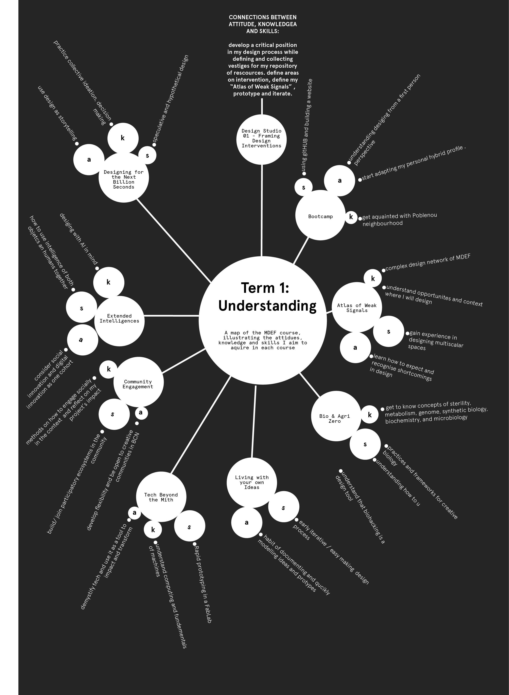
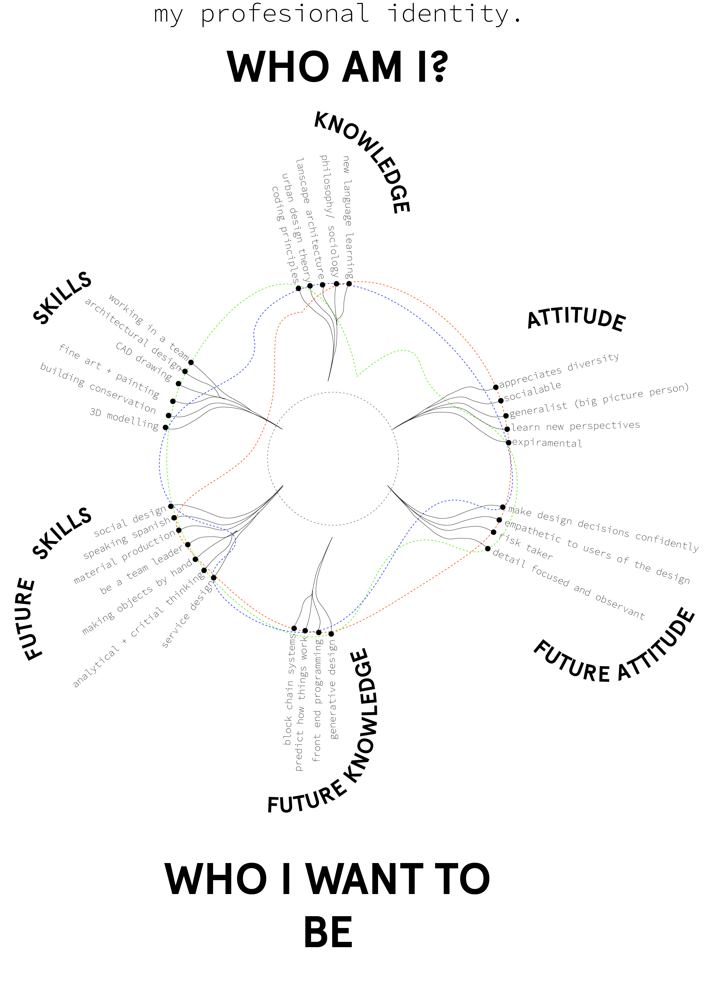

10 October 2021
What disruptions can we make together to give acknowledgement and power to those functioning in heterotopias? Questioning how people and space work in the inbetween, I have been inspired by the philosophy of Michel Foucault who describes in between spaces as “certain cultural, institutional and discursive spaces that are somehow ‘other’: disturbing, intense, incompatible, contradictory or transforming” . My fight is giving voice to these emerging spaces and their inhabitants and learning from them.
WEEK 1 BOOTCAMP REFLECTION
A PRECEDENT OF DESIGNING IN FIRST PERSON PERSPECTIVE
WHO AM I? WHO DO I NEED TO BECOME?
Reflections on my personal development plan After visiting the neighbourhood of Poblenou and attending the seminar on first person perspectives, I came to learn that I am part of an ecosystem with multiple traversing connections and networks. These connections meet all my present and future skills, attitudes and knowledges building my journey and professional identity With self direction, I can take charge of my own development and move towards my goals. I should be aware of my limitations and learn from my peers and surrounds My vision and current identity culminate into my personal development plan. Receiving feedback from peers and the community compares and strengthens my directionAssemblage poster made during the week depicting my fight
My personal development plan during MDEF
Course framework of what I anticipate to learn in terms of attitude, skills and knowledge